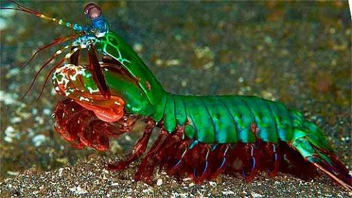
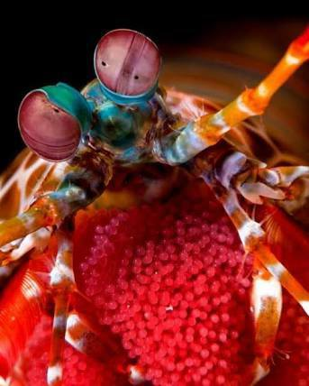

Fatos sobre o Stomatopoda
Informações gerais
Camarão mantis, camarão louva-a-Deus, camarão boxeador, camarão pistola, camarão de estalo, lacraia-do-mar e tamarutaca são alguns dos nomes comuns para o crustáceo marinho (muito parecido com um camarão, mas não é um camarão!).
| Classificação Científica | |
|---|---|
| Reino | Animalia |
| Filo | arthropoda |
| Subfilo | crustacea |
| Classe | Malacostraca |
| Subclasse | Hoplocarida |
| Ordem | Stomatopoda Latreille, 1817 |
O olho que tudo vê

Esses animais possuem o mais complexo sistema de visão de cores do mundo animal, pois enxergam 12 cores primárias, correspondentes aos 12 pigmentos distintos presentes em sua retina.
Sua força
As Odontodactylus scyllarus são capazes de desferir um dos mais rápidos e violentos golpes do reino animal, um soco que pode apresentar a velocidade de um tiro calibre .22 (equivalente a 720 km/h) e uma pressão de impacto de 600 N/cm².